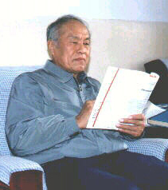

张嗣瀛 中国科学院院士

张嗣瀛，男，汉族，山东省章丘县人，1925年4月5日生。1948年8月武汉大学毕业，1949年10月到东北大学任教。1957年9月至1959年7月在莫斯科大学数学力学系进修自动控制理论。1978年晋升为教授。1983年起任博士生导师。
在自动控制理论的稳定性理论、复杂控制系统理论等方面，发表论文200余篇。专著《微分对策》，主编《现代控制理论》。参加"红箭-73"反坦克导弹的研制，先后获国家自然科学奖及国家和冶金部的奖励。以"微分对策及定性极值原理的研究"等为题的研究成果均获国家教委的奖励。
现为博士生讲授"微分几何方法"等两门课。已培养博士21人，硕士30余人，博士后2人。1981年以后分别任《控制与决策》等刊物的主编或副主编。1983年任《中国大百科全书〈自动控制与系统工程卷〉》编委兼控制理论分支主编。1985年起任国务院学位委员会第二届学科评议组成员。
1978年以来，先后被评为部、省、市劳动模范或特等劳动模范，1990年被评为国家教委、国家科委"全国高校先进科技工作者"。1997年当选为中国科学院院士。1998年获全国"五一"劳动奖章。